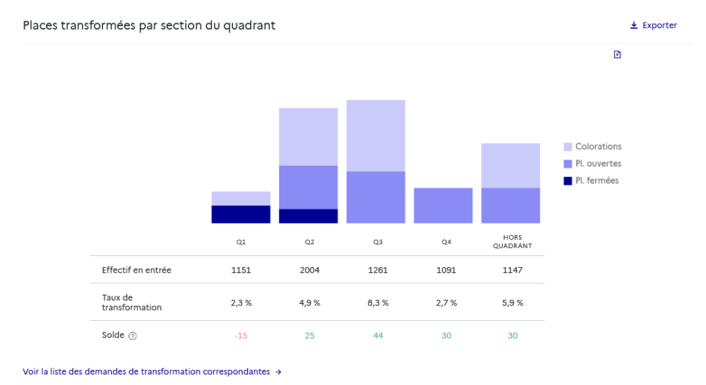

Utiliser l’onglet « Quadrant » pour visualiser les transformations par section
La page Pilotage comporte deux vues d’analyse différentes. Utiliser les onglets sous les indicateurs clés de transformation permet de basculer entre ces vues :
Répartition globale : vue par défaut, détaillée précédemment ;
Quadrant vue alternative.
Remarque - Filtres⚓
Les filtres de haut de page s’appliquent uniformément aux deux vues de la page.
Places transformées par section du quadrant⚓

Cet histogramme permet de visualiser les transformations prévues par section du quadrant, ainsi que les transformations sur des formations hors quadrant.
→ Pour comprendre dans quels cas des formations sont hors quadrant
On peut exporter les données, ou cliquer sur le lien Voir la liste des demandes de transformation correspondantes pour afficher la liste des formations à la maille fine dans la page de Restitution des demandes.